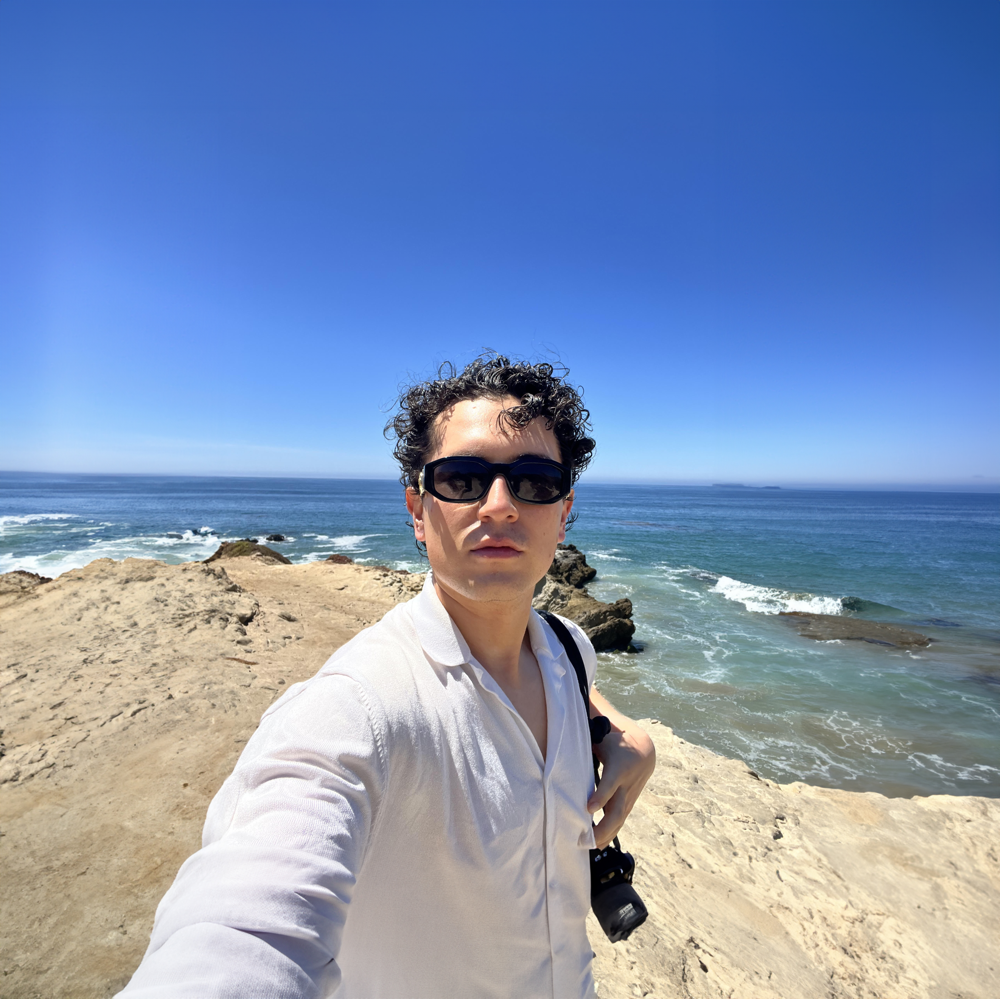

GIS Researcher · Cartographer · Architect
Juan
Sebastian
Cortes
M.S. Geographic Information Science & Technology
University of Southern California · Expected Dec 2026
I'm a Colombian spatial scientist and former architect currently based in Denver, CO. I design maps, build geospatial tools, and tell data-driven stories about the places and systems that shape our world, from wildfire-damaged water infrastructure in California to vanishing páramo ecosystems in the Colombian Andes.
My Story
I started my career as an architect at Universidad de los Andes in Bogotá, where I developed a deep interest in how space, infrastructure, and people interact at the urban scale. That curiosity led me to GIS — first as a tool in design projects, then as a discipline of its own. After contributing to the architectural design of four stations along Bogotá's first metro line and working in water sustainability research, I made the leap to pursue a master's degree in Geographic Information Science and Technology at USC.
At USC's Spatial Sciences Institute, I've built Python toolboxes for predictive infrastructure modeling, designed interactive biodiversity web maps, simulated wildfire spread with agent-based models, and conducted spatial econometric studies of environmental inequality. My work sits at the intersection of data science, cartography, and environmental storytelling, with a particular focus on Colombia and the American West.
Awards & Recognition
Outstanding Paper by a Master's Student
ArcGIS StoryMaps Competition
Education
-
University of Southern CaliforniaM.S. Geographic Information Science and Technology · Spatial Sciences InstituteLos Angeles, CA
Expected Dec 2026 -
Universidad de los AndesBachelor of Architecture and DesignBogotá, Colombia
April 2020
Experience
-
Summer 2025GIS InternLas Flores Water Company · Altadena, CALed post-fire field data collection and built a FEMA-ready report to fund water-meter repairs after the 2025 Altadena (Eaton) Fire, using ArcGIS Survey123 and ArcGIS StoryMaps.
-
Aug–Dec 2025Teaching Assistant, Human Populations and Natural HazardsUniversity of Southern California · Los Angeles, CASupported instruction and applied GIS learning for an undergraduate course on hazard exposure, vulnerability, and environmental risk, covering floods, wildfires, earthquakes, and sea-level rise.
-
Feb 2021–Nov 2022Design ArchitectWSP, Bogotá Metro Line 1 · Bogotá, ColombiaCreated architectural designs for four stations along Bogotá's first metro line, working in multidisciplinary teams and applying GIS for spatial decisions in station placement and infrastructure planning.
-
Jul–Dec 2019Research AssistantUniversidad de los Andes · Bogotá, ColombiaContributed to water management studies for Bogotá's river systems, applying GIS and demographic data to support environmental assessment and sustainable urban planning research.
Skills & Tools
GIS & Spatial Analysis
Programming & Data
Design & Visualization
Outside the Lab